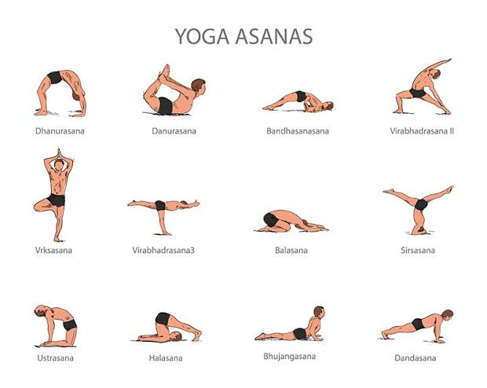
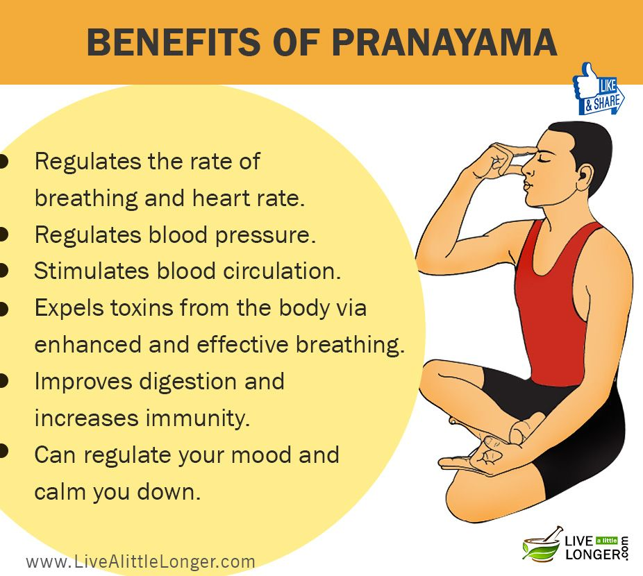
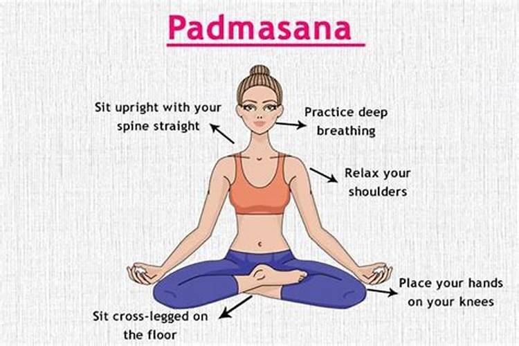
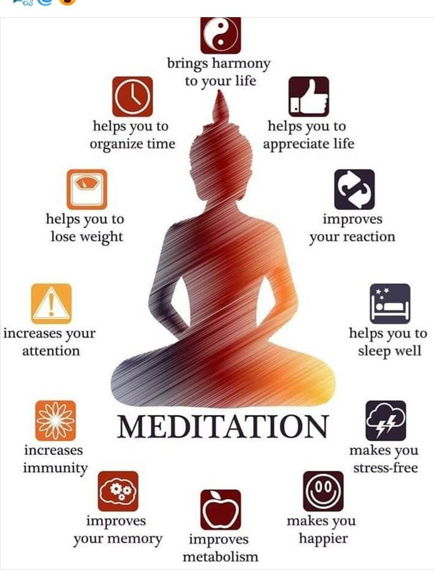

Yoga and meditation are two practices that are often combined to promote physical,
mental, and spiritual well-being. While they are separate practices, they complement
each other and are often practiced together to achieve a harmonious and
balanced state of being.Here's a brief overview of both practices:
YOGA
Yoga is an ancient Indian practice that combines physical postures, breathing exercises,
and meditation. It aims to promote flexibility, strength, and balance in the body,
as well as relaxation and mental clarity. Yoga encompasses various styles,
such as Hatha,Vinyasa, Ashtanga, and Kundalini, each with its own focus
and approach.Through the practice of yoga, individuals can enhance their
physical fitness, reduce stress,improve concentration, and cultivate a sense of inner peace
Asanas (postures)
These are the physical postures or poses that are practiced to increase strength,
flexibility, and balance.

Pranayama (breathing techniques)
These are the breathing exercises that are practiced to increase lung capacity,
reduce stress, and promote relaxation.

Padmasana
Padmasana is the Sanskrit name for a renowned yoga asana, otherwise known as Lotus Pose.
It is a seated posture, in which the legs are crossed and the feet are positioned on top
of the opposite thighs at the hip crease. The term is derived from two Sanskrit roots; padma,
meaning "lotus" and asana meaning "seat" or "posture".

Meditation
Meditation is a practice that involves training the mind to focus on the present moment,
with the aim of achieving a state of calmness and relaxation. It has become increasingly
popular in recent years, and there are numerous benefits to incorporating meditation into
a healthy lifestyle.Here are some reasons why meditation is important for a healthy lifestyle.
